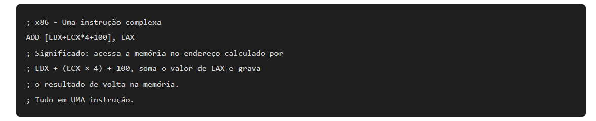
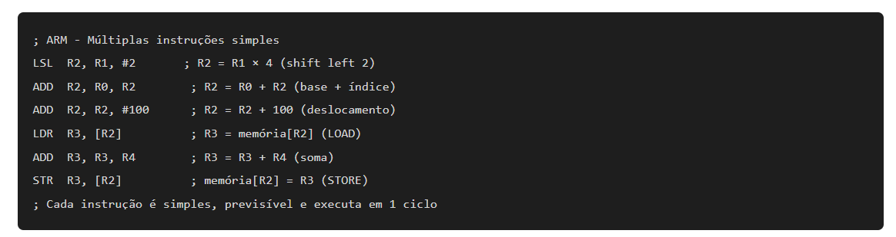
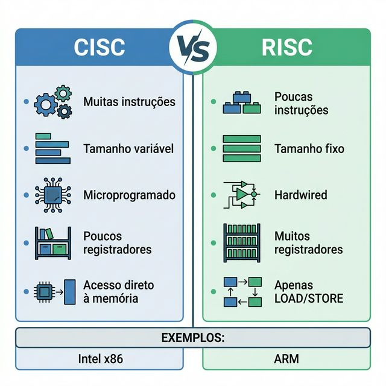
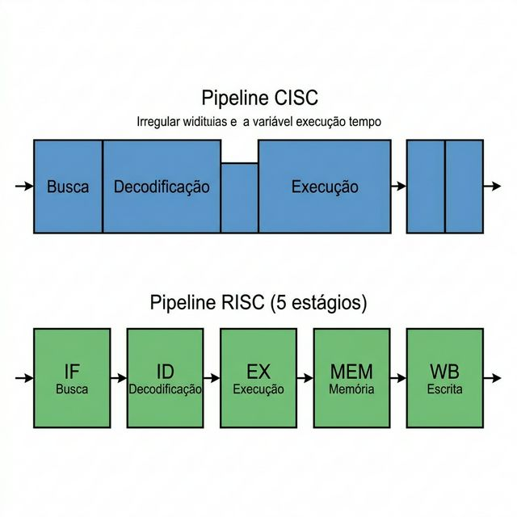
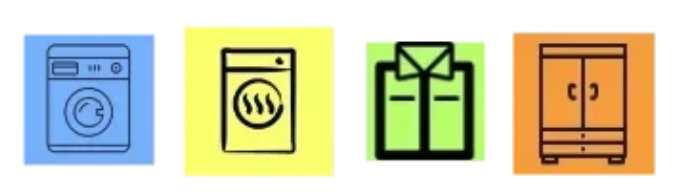
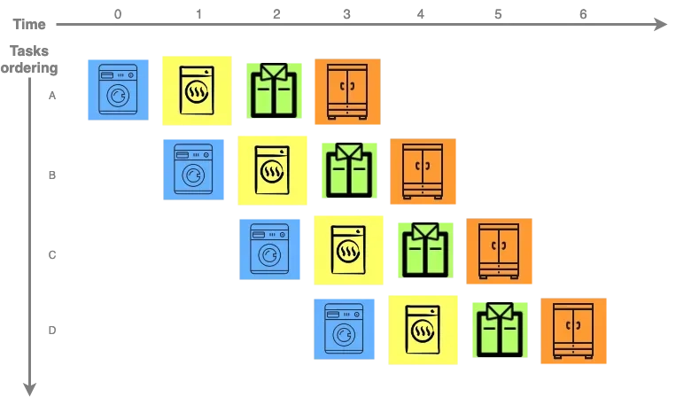
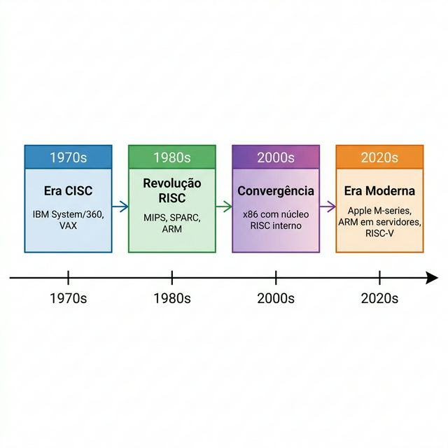
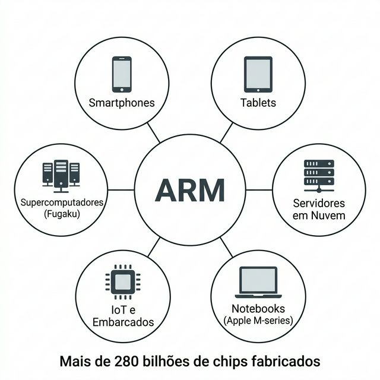

🖥️ Aula 04: Arquiteturas CISC vs. RISC
🎯 Objetivo da Aula
Ao final, o aluno deve:
- Definir o que são conjuntos de instruções (ISA) e por que são fundamentais na arquitetura de um processador
- Diferenciar as filosofias CISC e RISC com critérios técnicos objetivos
- Analisar vantagens e desvantagens de cada abordagem em cenários reais
- Identificar a convergência atual entre CISC e RISC nos processadores modernos
- Relacionar a escolha de arquitetura com aplicações práticas (servidores, mobile, embarcados)
Base conceitual alinhada com:
- William Stallings, Arquitetura e Organização de Computadores, 11ª ed., Cap. 15 (“Conjuntos de Instruções: Características e Funções”) e Cap. 13 (“RISC”)
- Andrew S. Tanenbaum, Organização Estruturada de Computadores, 6ª ed., Cap. 2 (“Organização de Sistemas de Computadores”) e Cap. 5 (“O Nível de Arquitetura do Conjunto de Instruções”)
0️⃣ Revisão da Aula Anterior: 5 Perguntas sobre Sistemas de Computação
Antes de avançar, vamos verificar os conceitos da Aula 03. Responda mentalmente ou anote:
| # | Pergunta | Conceito Avaliado |
|---|---|---|
| 1 | Qual a diferença fundamental entre um sistema Hard Real-Time e um Soft Real-Time? Dê um exemplo de cada. | Classificação de Sistemas de Tempo Real |
| 2 | Um microcontrolador (como o Arduino) pode ser considerado um computador? Justifique com base nos três pilares do hardware (CPU, Memória, E/S). | Sistemas Embarcados + Pilares do Hardware |
| 3 | O que significa transparência no contexto de sistemas distribuídos? Por que ela é importante? | Sistemas Distribuídos |
| 4 | O sistema de freio ABS de um carro é apenas embarcado, apenas tempo real, ou ambos? Justifique. | Sobreposição de categorias |
| 5 | Um termostato inteligente (como o Nest) combina quais tipos de sistema? Explique como ele se conecta a cada categoria. | Convergência: Embarcado + Soft RT + Distribuído |
Respostas rápidas para discussão em sala:
1️⃣ Recapitulação: De Onde Viemos?
🔗 Conexão com a Aula 03
Na aula anterior, classificamos os sistemas de computação em três grandes categorias:
| Sistema | Foco Principal | Exemplo Síntese |
|---|---|---|
| Embarcado | Função dedicada com hardware otimizado | Controle de micro-ondas |
| Tempo Real | Resposta correta dentro de um prazo (deadline) | ABS de um carro |
| Distribuído | Cooperação entre máquinas com transparência | Google Search |
Mensagem-chave:
conjunto de instruções33,
2️⃣ O Que É um Conjunto de Instruções (ISA)?
📋 2.1 Definição
O ISA (Instruction Set Architecture) é a interface entre o software e o hardware. Define:
- Quais instruções o processador pode executar (somar, comparar, mover dados)
- Quantos registradores estão disponíveis
- Como os dados são acessados na memória (modos de endereçamento)
- O formato das instruções (tamanho fixo ou variável)
Stallings (Cap. 15): define ISA como “a especificação de todas as funções que o processador pode executar, incluindo tipos de dados, instruções, registradores e modos de endereçamento.”
Tanenbaum (Cap. 5): trata o ISA como um “nível” na organização hierárquica do computador, situado entre a microprogramação (hardware) e o sistema operacional (software).
🧩 2.2 Por Que o ISA Importa?
| Aspecto | Impacto |
|---|---|
| Compatibilidade de software | Programas compilados para um ISA (ex: x86) não rodam nativamente em outro (ex: ARM) |
| Desempenho | O projeto do ISA influencia diretamente velocidade de clock, pipeline e consumo |
| Custo do hardware | ISAs mais complexos exigem circuitos maiores e mais caros |
| Consumo energético | ISAs mais simples consomem menos energia (crucial para mobile e IoT) |
| Ecossistema | O ISA define o ecossistema de compiladores, sistemas operacionais e ferramentas |
💡 2.3 Analogia
O ISA é como o idioma
3️⃣ Arquitetura CISC (Complex Instruction Set Computer)
🔧 3.1 Definição
CISC é uma filosofia de projeto de processadores que oferece um grande número de instruções, muitas delas complexas, capazes de realizar operações de alto nível em uma única instrução.
Stallings (Cap. 13): descreve a motivação original do CISC: aproximar a linguagem de máquina das linguagens de alto nível, reduzindo o “gap semântico” entre o que o programador escreve e o que o hardware executa.
Tanenbaum (Cap. 5): explica que a abordagem CISC surgiu numa época em que compiladores eram primitivos e a memória era cara, então instruções complexas economizavam memória.
🧩 3.2 Características Técnicas
| Característica | Detalhe |
|---|---|
| Número de instruções | Grande (centenas a milhares) |
| Formato das instruções | Comprimento variável (1 a 15 bytes no x86) |
| Modos de endereçamento | Muitos e complexos (direto, indireto, indexado, base+deslocamento) |
| Acesso à memória | Qualquer instrução pode acessar a memória diretamente |
| Unidade de controle | Microprogramada (microcódigo interpreta instruções complexas) |
| Registradores | Poucos registradores de propósito geral |
| Ciclos por instrução (CPI) | Variável (1 a muitos ciclos por instrução) |
| Pipeline | Difícil de otimizar devido à variabilidade das instruções |
🌍 3.3 Exemplos Reais
- Intel x86/x64: presente em PCs, notebooks e servidores desde 1978
- AMD x86-64: extensão 64 bits da arquitetura x86
- VAX (DEC): arquitetura clássica CISC dos anos 1970-80 com mais de 300 instruções
- IBM System/360: uma das primeiras arquiteturas CISC, revolucionou a computação empresarial
- Motorola 68000: usada no Macintosh original e Amiga
📝 3.4 Exemplo de Instrução CISC
Uma única instrução CISC pode fazer o trabalho de várias instruções simples:

Essa única instrução envolve: cálculo de endereço complexo, leitura da memória, operação aritmética e escrita na memória.
💡 3.5 Analogia
O processador CISC é como um canivete suíço
4️⃣ Arquitetura RISC (Reduced Instruction Set Computer)
⚡ 4.1 Definição
RISC é uma filosofia de projeto que utiliza um conjunto reduzido de instruções simples, cada uma executada em um único ciclo de clock, permitindo pipelines eficientes e alto desempenho.
Stallings (Cap. 13): apresenta os princípios fundadores do RISC estabelecidos por Patterson (Berkeley) e Hennessy (Stanford) nos anos 1980: instruções simples, formato fixo, execução em um ciclo, muitos registradores.
Tanenbaum (Cap. 2): explica que a filosofia RISC se baseia na observação de que, na prática, compiladores usam apenas um subconjunto pequeno das instruções CISC, então faz mais sentido otimizar esse subconjunto.
🧩 4.2 Características Técnicas
| Característica | Detalhe |
|---|---|
| Número de instruções | Reduzido (tipicamente menos de 100 instruções base) |
| Formato das instruções | Comprimento fixo (32 bits no ARM, MIPS) |
| Modos de endereçamento | Poucos e simples (registrador, imediato, base+deslocamento) |
| Acesso à memória | Apenas instruções LOAD/STORE acessam a memória |
| Unidade de controle | Hardwired (circuito lógico direto, sem microcódigo) |
| Registradores | Muitos registradores de propósito geral (32 a 64) |
| Ciclos por instrução (CPI) | Idealmente 1 ciclo por instrução |
| Pipeline | Altamente eficiente devido à uniformidade das instruções |
🌍 4.3 Exemplos Reais
- ARM: presente em 99% dos smartphones, tablets e relógios inteligentes do mundo
- Apple M1/M2/M3/M4: processadores ARM que revolucionaram o mercado de notebooks e desktops
- MIPS: usado em roteadores, consoles (PlayStation 1/2), e base do ensino de arquitetura
- RISC-V: ISA aberto e livre, em crescimento acelerado para IoT e embarcados
- SPARC: usado em servidores Sun/Oracle de alta performance
- AWS Graviton: processadores ARM para servidores em nuvem da Amazon
📝 4.4 Exemplo de Instrução RISC
A mesma operação do exemplo CISC requer múltiplas instruções simples em RISC:

São 6 instruções em vez de 1, mas cada uma é simples, tem formato fixo e passa pelo pipeline sem gargalos.

Infográfico comparativo CISC vs. RISC lado a lado, com características principais de cada filosofia em destaque.
💡 4.5 Analogia
O processador RISC é como uma linha de montagem industrial
5️⃣ Comparação Estrutural: CISC vs. RISC
| Critério | CISC | RISC |
|---|---|---|
| Filosofia | Instruções complexas no hardware | Instruções simples otimizadas |
| Número de instruções | Centenas a milhares | Dezenas a ~100 |
| Formato | Comprimento variável | Comprimento fixo |
| Acesso à memória | Qualquer instrução | Apenas LOAD/STORE |
| Registradores | Poucos (8-16) | Muitos (32-64) |
| Controle | Microprogramado (microcódigo) | Hardwired (circuito direto) |
| CPI médio | Alto e variável | Próximo de 1 |
| Pipeline | Complexo e ineficiente | Simples e eficiente |
| Complexidade do compilador | Menor (hardware “ajuda”) | Maior (compilador otimiza) |
| Consumo energético | Maior | Menor |
| Uso típico | PCs, servidores legados | Mobile, embarcados, IoT |
| Exemplo principal | Intel x86 | ARM |
A diferença entre CISC e RISC não é que um é melhor que o outro

Diagrama comparando pipeline CISC (estágios variáveis) vs. pipeline RISC (5 estágios uniformes: IF, ID, EX, MEM, WB).
6️⃣ O Conceito de Pipeline
🔄 6.1 O Que É Pipeline?
Pipeline é a técnica de dividir a execução de uma instrução em estágios, permitindo que múltiplas instruções sejam processadas simultaneamente (como uma linha de montagem).
Stallings (Cap. 12): dedica um capítulo inteiro ao pipeline, mostrando como ele multiplica o throughput do processador.
🏗️ 6.2 Pipeline Clássico RISC (5 Estágios)
Instrução 1: | IF | ID | EX | MEM | WB |
Instrução 2: | IF | ID | EX | MEM | WB |
Instrução 3: | IF | ID | EX | MEM | WB |
Instrução 4: | IF | ID | EX | MEM | WB |
| Estágio | Nome | Função |
|---|---|---|
| IF | Instruction Fetch | Buscar a instrução na memória |
| ID | Instruction Decode | Decodificar e ler registradores |
| EX | Execute | Executar a operação na ALU |
| MEM | Memory Access | Acessar memória (se LOAD/STORE) |
| WB | Write Back | Escrever resultado no registrador |
No RISC, como todas as instruções têm formato fixo e mesma duração, o pipeline flui sem interrupções. No CISC, instruções de tamanhos diferentes criam “bolhas” no pipeline, reduzindo a eficiência.
💡 6.3 Analogia
O pipeline é como uma lavanderia com várias máquinas


7️⃣ A Convergência: Processadores Modernos
🔀 7.1 CISC Por Fora, RISC Por Dentro
A partir dos anos 1990, a Intel adotou uma estratégia híbrida: processadores x86 mantêm a interface CISC externamente (compatibilidade com software), mas internamente traduzem as instruções complexas em micro-operações (μops) similares a RISC.
Stallings (Cap. 13): documenta a convergência: “processadores modernos x86 utilizam um front-end que decodifica instruções CISC em micro-operações RISC, alimentando um back-end superescalar.”
📊 7.2 Evidências da Convergência
| Evidência | CISC → RISC | RISC → CISC |
|---|---|---|
| Intel/AMD x86 | Traduzem instruções em μops RISC internamente | — |
| ARM | — | Adicionaram instruções complexas (NEON, SVE) para multimídia |
| Apple M-series | — | ARM com decodificadores largos e execução fora de ordem (técnica originalmente CISC) |
| RISC-V | — | Extensões opcionais adicionam complexidade quando necessário |

Timeline da evolução dos processadores: era CISC (1970s), revolução RISC (1980s), convergência (2000s), era ARM moderna (2020s).
🌍 7.3 O Caso ARM: De Celulares a Servidores
O ARM é o maior caso de sucesso da filosofia RISC:
| Marco | Ano | Significado |
|---|---|---|
| ARM1 (Acorn) | 1985 | Primeiro processador ARM, 25 mil transistores |
| ARM no Newton (Apple) | 1993 | Primeiro uso da Apple com ARM |
| ARM em smartphones | 2007+ | iPhone e Android adotam ARM massivamente |
| Apple M1 | 2020 | ARM supera Intel em desempenho/watt em notebooks |
| AWS Graviton 3 | 2021 | ARM em servidores de nuvem com melhor custo-benefício |
| ARM em supercomputadores | 2020 | Fugaku (Japão): supercomputador #1 do mundo usando ARM (A64FX) |
Mais de
280 bilhões

Infográfico mostrando ARM em smartphones, tablets, servidores, MacBooks (M-series), drones e IoT.
8️⃣ RISC-V: O Futuro Aberto
🔓 8.1 O Que É RISC-V?
RISC-V (pronuncia-se “RISC five”) é uma arquitetura de conjunto de instruções aberta e livre (open-source ISA), criada na UC Berkeley em 2010. Qualquer empresa pode projetar processadores RISC-V sem pagar royalties.
| Característica | Detalhe |
|---|---|
| Origem | UC Berkeley, 2010 |
| Licença | Aberta (sem royalties) |
| Filosofia | RISC modular com extensões opcionais |
| Governança | RISC-V International (fundação sem fins lucrativos) |
| Aplicações atuais | IoT, embarcados, aceleradores de IA |
| Apoiadores | Google, NVIDIA, Qualcomm, Samsung, entre outros |
RISC-V está para processadores assim como Linux está para sistemas operacionais
9️⃣ Resumo Estrutural da Aula
| Conceito | Definição em uma frase |
|---|---|
| ISA | Interface que define quais instruções o processador entende |
| CISC | Filosofia com muitas instruções complexas, formato variável, controle microprogramado |
| RISC | Filosofia com poucas instruções simples, formato fixo, controle hardwired |
| Pipeline | Técnica que divide a execução em estágios para processar múltiplas instruções em paralelo |
| Convergência | Processadores modernos misturam elementos CISC e RISC |
| ARM | Maior caso de sucesso RISC: de celulares a supercomputadores |
| RISC-V | ISA aberto e livre, o futuro democrático da arquitetura de processadores |
| μops | Micro-operações RISC geradas internamente por processadores x86 (CISC por fora, RISC por dentro) |
🔟 Metodologia Ativa: Atividade Prática
🎓 Atividade: “Analise a Arquitetura”
Formato: Aprendizagem Baseada em Problemas (PBL)
Instrução para os alunos:
Para cada cenário abaixo, determine:
- Qual filosofia de ISA é mais adequada (CISC ou RISC)?
- Justifique com base em pelo menos dois critérios da tabela comparativa
- Cite um processador real que atenderia ao cenário
| # | Cenário | Resposta Esperada |
|---|---|---|
| 1 | Projetar um sensor IoT alimentado por bateria que deve operar por anos | RISC (ARM Cortex-M / RISC-V): baixo consumo, instruções simples |
| 2 | Servidor empresarial que precisa rodar software legado Windows/Linux de 20 anos | CISC (x86/x64): compatibilidade retroativa com software existente |
| 3 | Smartphone que precisa equilibrar desempenho e duração de bateria | RISC (ARM Cortex-A, big.LITTLE): eficiência energética com alto desempenho |
| 4 | Workstation para edição de vídeo 4K com software Adobe | CISC (x86) ou ARM (Apple M-series): depende do ecossistema de software |
| 5 | Supercomputador para simulação climática | RISC (ARM A64FX como no Fugaku): alto throughput, eficiência energética |
| 6 | Console de videogame de nova geração | CISC (x86 customizado pela AMD, como no PS5/Xbox): ecossistema de jogos x86 |
| 7 | Microcontrolador para controle de motor de drone | RISC (ARM Cortex-M / RISC-V): tempo real, baixo consumo, custo baixo |
🧪 Desafio Extra (Sala de Aula Invertida)
Para casa: Pesquisar e trazer para a próxima aula uma análise comparativa entre dois processadores reais: um CISC e um RISC. O aluno deve:
- Identificar o processador e seu ISA
- Listar: número de transistores, clock máximo, TDP (consumo), ano de lançamento
- Comparar usando a tabela CISC vs. RISC da aula
- Concluir qual é mais adequado para o cenário escolhido e por quê
Sugestões de pares para comparação:
- Intel Core i7 (13ª geração) vs. Apple M3
- AMD Ryzen 9 vs. AWS Graviton 3
- Intel Atom vs. ARM Cortex-A55
- Qualquer processador x86 vs. qualquer processador RISC-V
1️⃣1️⃣ Referências Bibliográficas
📖 Referências Obrigatórias
- STALLINGS, W. Arquitetura e Organização de Computadores: projetando com foco em desempenho. 11ª ed. São Paulo: Pearson, 2024.
- Capítulo 13: Computadores com Conjunto Reduzido de Instruções (RISC), comparação CISC vs. RISC e princípios do projeto RISC.
- Capítulo 15: Conjuntos de Instruções: Características e Funções, definição de ISA, formatos, modos de endereçamento.
- Capítulo 12: Estrutura e Função do Processador, pipeline e execução de instruções.
- TANENBAUM, A. S. Organização Estruturada de Computadores. 6ª ed. São Paulo: Pearson, 2013.
- Capítulo 2: Organização de Sistemas de Computadores, visão geral de CPU, registradores e ciclo de instrução.
- Capítulo 5: O Nível de Arquitetura do Conjunto de Instruções, formatos de instrução e filosofias de projeto.
- CORRÊA, A. G. D. Organização e Arquitetura de Computadores. São Paulo: Pearson, 2016.
📄 Referências Complementares e Artigos
- PATTERSON, D. A.; HENNESSY, J. L. Computer Organization and Design: The Hardware/Software Interface. 6th ed. Morgan Kaufmann, 2020.
- Referência clássica que apresenta a filosofia RISC pelos próprios criadores do conceito. Capítulo 2 cobre o ISA do MIPS em detalhes.
- PATTERSON, D. A.; DITZEL, D. R. “The Case for the Reduced Instruction Set Computer.” ACM SIGARCH Computer Architecture News, vol. 8, no. 6, 1980, pp. 25-33.
- Artigo seminal que inaugurou o debate CISC vs. RISC e formalizou os argumentos a favor do RISC.
- WATERMAN, A.; ASANOVIĆ, K. (Eds.) “The RISC-V Instruction Set Manual.” RISC-V International, 2019.
- Especificação oficial do ISA RISC-V, disponível gratuitamente. Documenta a arquitetura base e extensões.
- BLEM, E.; MENON, J.; SANKARALINGAM, K. “Power Struggles: Revisiting the RISC vs. CISC Debate on Contemporary ARM and x86 Architectures.” Proceedings of HPCA, 2013.
- Estudo comparativo moderno que analisa consumo energético real entre ARM e x86, confirmando a convergência.
🔗 Links Úteis para Aprofundamento
| Recurso | Descrição | Link |
|---|---|---|
| RISC-V International | Organização oficial do ISA aberto RISC-V | riscv.org |
| ARM Developer | Documentação técnica oficial da ARM | developer.arm.com |
| Intel Developer Zone | Manuais de ISA x86 e ferramentas | intel.com/developer |
| MARS Simulator | Simulador MIPS para prática de assembly RISC | courses.missouristate.edu/MARS |
| Godbolt Compiler Explorer | Visualizador online de assembly para diferentes ISAs | godbolt.org |